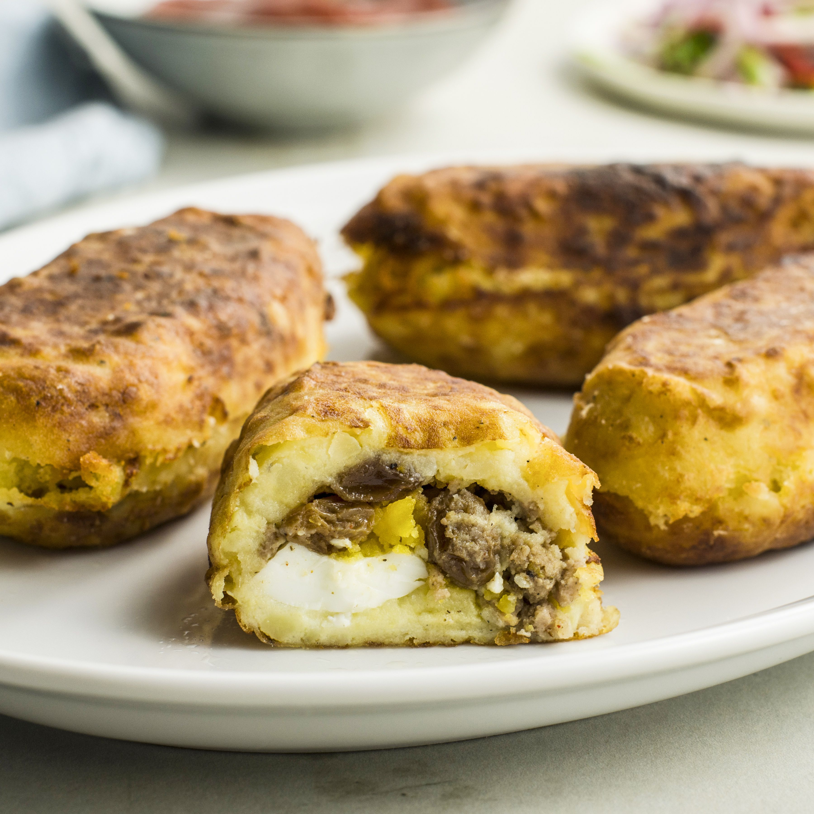

Papa Rellena
Home

Description
Papa Rellena is one of my favorite dishes made by my beautiful peruvian wife. It has a texture similar to mashed potatoes with a filling of ground beef, hard boiled eggs, and delicious black olives.
This peruvian dish is a easy and savory dish that everyone will enjoy.
Ingredients
- Potatoes
- Ground Beef
- Black Olives
- Hard boiled egg
- olive oil
- chopped onions
Steps
- boil potatoes
- chop onions
- mash potatoes
- brown ground beef
- chop up hard boiled egg
- form mashed potato into a bowl shape in hand
- fill potatoe bowl with meat and eggs
- fry papa rellena slightly